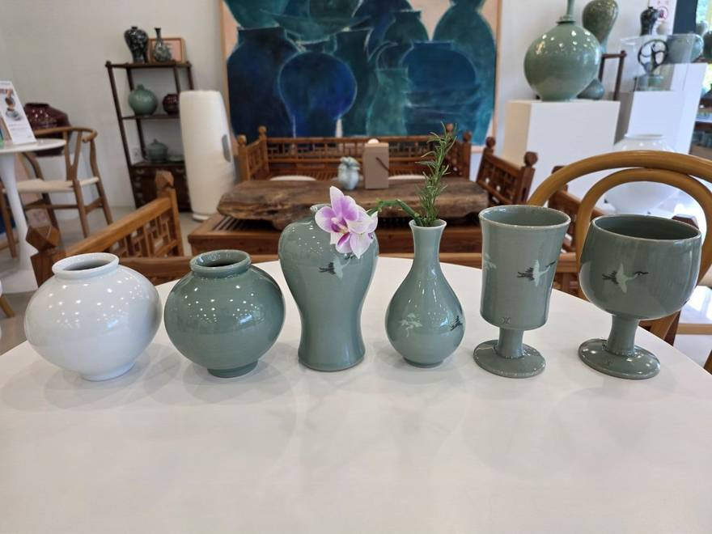
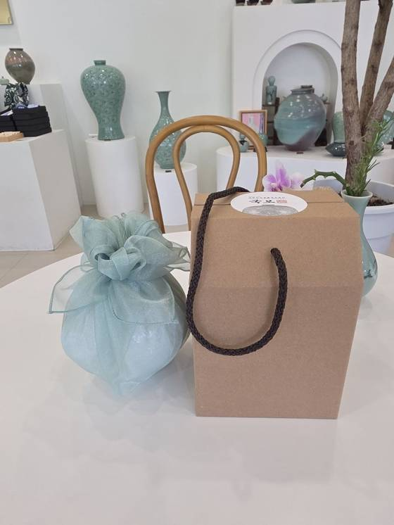
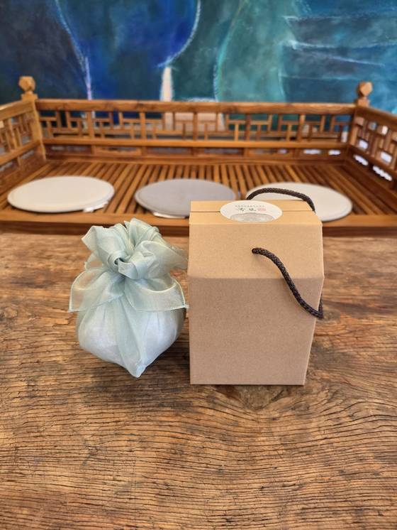

통역이 필요 없는 선물 — 국제회의·해외출장 답례품, 귀빈·VIP 의전 선물, 공공기관 기념품으로 사랑받는 고려청자



국빈·귀빈 선물의 격식 그대로, 받는 분의 격을 높이는 포장으로 전해 드립니다
습도 조절과 보존성이 우수한 오동나무 상자. 상자 위에 기업 로고·기념 문구 각인이 가능합니다. (+10,000원)
작가 서명이 들어간 국·영문 보증서를 동봉합니다. 청자의 유래와 문양의 상징, 2대 가업의 내력을 함께 전합니다.
비색과 어우러지는 전통 보자기로 마무리합니다. 단체 수량도 동일한 격식으로 준비해 드립니다.